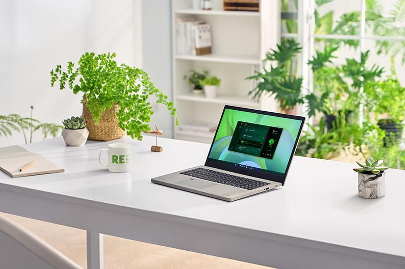
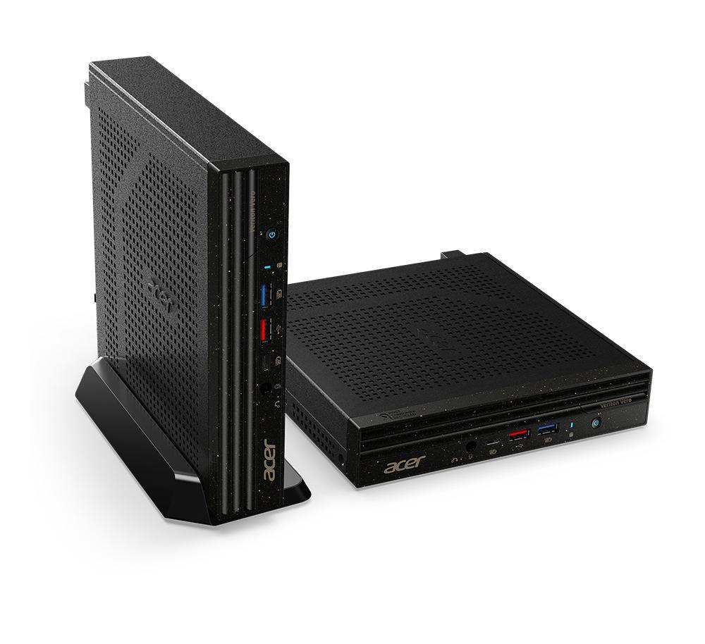
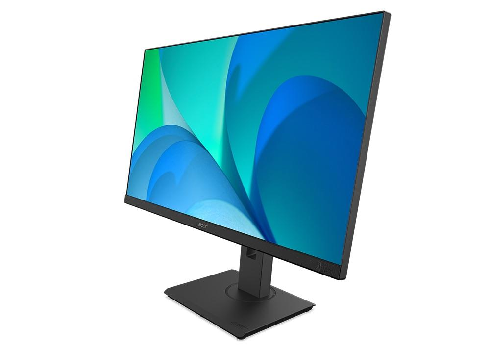

Acer mở rộng danh sách các sản phẩm Vero thân thiện với môi trường
Acer vừa tung ra một dòng máy tính cá nhân xanh với dòng Vero của mình, bao gồm máy tính xách tay Acer Aspire Vero cho người tiêu dùng và máy tính xách tay Acer TravelMate Vero cho mục đích thương mại.Từ máy tính cá nhân đến thiết bị ngoại vi, thiết bị Vero có chung một số nguyên tắc xanh nhất định, chẳng hạn như sử dụng nhựa tái chế (PCR) sau tiêu dùng và vận chuyển trong bao bì có thể tái chế. Vì tính bền vững không chỉ liên quan đến cách một sản phẩm được tạo ra mà còn là những gì nó trở thành, các thiết bị Vero của Acer cũng được thiết kế để dễ dàng tháo rời, đơn giản hóa quá trình sửa chữa hoặc nâng cấp và mục đích cuối cùng là kéo dài tuổi thọ của thiết bị.
Acer Aspire Vero – Laptop Xanh
Không chỉ là một mẫu máy tính sành điệu, Acer Aspire Vero (AV15-51) là biểu hiện hữu hình cho cam kết của Acer đối với các hoạt động bền vững hơn. Khung của máy được làm bằng 30% nhựa PCR, giảm 21% lượng khí thải CO2 trong quá trình sản xuất bộ phận này. Các keycap cũng chứa 50% nhựa PCR và bao bì có thể tái chế 100% từng đoạt giải thưởng của Aspire Vero có thể được tái sử dụng như một giá đỡ máy tính xách tay tự làm. Từ đó, một thiết kế chỉn chu giúp loại bỏ sự lãng phí không cần thiết bằng cách khiến người dùng thể dễ dàng tháo rời, sửa chữa, nâng cấp và tái chế máy hoặc các thành phần của nó. Với việc chạy hệ điều hành Windows 11 mới phát hành, nó cũng vô cùng dễ sử dụng.

Phiên bản này của TravelMate Vero giúp các công ty có thể tùy chỉnh biểu tượng khởi động của máy tính xách tay, một phần quan trọng trong việc xây dựng thương hiệu cho các doanh nghiệp lớn và nhỏ. Điều này có thể thực hiện được nhờ các tính năng có sẵn trong Acer Commercial BIOS, tính năng này cũng giúp bạn có thể khóa hoặc khôi phục BIOS, để cập nhật ngay cả trên nền tảng không phải Windows và tận dụng công nghệ xác thực CHIPSEC để cải thiện bảo mật hệ thống tốt hơn nữa. Là một phần trong dòng sản phẩm PC xanh của Vero, TravelMate Vero có 30% nhựa PCR trong toàn bộ vỏ ngoài của nó, được thiết kế để dễ dàng sửa chữa hoặc nâng cấp và vận chuyển trong bao bì có thể tái chế 100%.
Acer Veriton Vero Mini – Máy tính để bàn xanh
Acer Veriton Vero Mini (VVN4690G) là một máy tính nhỏ gọn thân thiện với môi trường được thiết kế để cung cấp hiệu năng cấp thương mại trong một cỗ máy nhỏ gọn và có thể tùy chỉnh, mang đến cho người dùng thiết bị hoàn hảo cho tính chất công việc riêng của họ. Máy có đầy đủ các cổng kết nối cần thiết mang lại tốc độ siêu nhanh như Wifi 6 (802.11ax) hoặc Wi-Fi 6E (802.11ax), các cổng USB và xuất hình ảnh, bao gồm cả cổng USB 3.2 Gen 2 Type-C cho phép truyền dữ liệu tốc độ cao và sạc các thiết bị ngoại vi. Thiết bị này sẽ sở hữu bộ vi xử lý Intel Core vPro thế hệ tiếp theo và với một bộ công cụ quản lý chuyên dụng như Acer Office Manager và Acer Control Center, nhân viên CNTT có thể quản lý trơn tru toàn bộ dàn máy tính của công ty.
Phiên bản này của TravelMate Vero giúp các công ty có thể tùy chỉnh biểu tượng khởi động của máy tính xách tay, một phần quan trọng trong việc xây dựng thương hiệu cho các doanh nghiệp lớn và nhỏ. Điều này có thể thực hiện được nhờ các tính năng có sẵn trong Acer Commercial BIOS, tính năng này cũng giúp bạn có thể khóa hoặc khôi phục BIOS, để cập nhật ngay cả trên nền tảng không phải Windows và tận dụng công nghệ xác thực CHIPSEC để cải thiện bảo mật hệ thống tốt hơn nữa. Là một phần trong dòng sản phẩm PC xanh của Vero, TravelMate Vero có 30% nhựa PCR trong toàn bộ vỏ ngoài của nó, được thiết kế để dễ dàng sửa chữa hoặc nâng cấp và vận chuyển trong bao bì có thể tái chế 100%.
Acer Veriton Vero Mini – Máy tính để bàn xanh
Acer Veriton Vero Mini (VVN4690G) là một máy tính nhỏ gọn thân thiện với môi trường được thiết kế để cung cấp hiệu năng cấp thương mại trong một cỗ máy nhỏ gọn và có thể tùy chỉnh, mang đến cho người dùng thiết bị hoàn hảo cho tính chất công việc riêng của họ. Máy có đầy đủ các cổng kết nối cần thiết mang lại tốc độ siêu nhanh như Wifi 6 (802.11ax) hoặc Wi-Fi 6E (802.11ax), các cổng USB và xuất hình ảnh, bao gồm cả cổng USB 3.2 Gen 2 Type-C cho phép truyền dữ liệu tốc độ cao và sạc các thiết bị ngoại vi. Thiết bị này sẽ sở hữu bộ vi xử lý Intel Core vPro thế hệ tiếp theo và với một bộ công cụ quản lý chuyên dụng như Acer Office Manager và Acer Control Center, nhân viên CNTT có thể quản lý trơn tru toàn bộ dàn máy tính của công ty.

Case của Veriton Vero Mini bao gồm 25% nhựa PCR và máy tính này có thể tái chế 100%.
Acer Vero BR277 – Màn hình xanh
Như một cam kết của Acer đối với môi trường, Acer Vero BR277 là một màn hình FHD với vỏ được làm từ hơn 50% nhựa PCR và đã đạt được chứng nhận xanh từ ENERGY STAR, TCO và EPEAT. Ưu tiên tiếp theo của chiếc màn hình là sự thoải mái: màn hình nằm trên đế Ergostand của Acer, cho phép người dùng nghiêng, xoay, điều chỉnh độ cao và xoay trục màn hình cho đến khi đạt được góc nhìn hoàn hảo, đồng thời màn hình này còn có bộ công nghệ VisionCare của Acer giúp giảm mỏi mắt. Chế độ ComfyView của màn hình sở hữu tấm nền không chói và không nhấp nháy, có thể làm giảm độ sáng đến 15%, mờ hơn đáng kể so với nhiều màn hình trên thị trường và cũng tận dụng BlueLightShield của Acer để giảm lượng ánh sáng xanh mà người dùng tiếp xúc trong quá trình sử dụng màn hình.
Cuối cùng, chiếc màn hình này có thể tái chế tới 100%.
Acer Earthion
Được coi là đỉnh cao sau hơn một thập kỷ nỗ lực bền vững của Acer, nền tảng Earthion kết hợp các nguồn sức mạnh của công ty, các đối tác trong chuỗi cung ứng, nhân viên và người tiêu dùng (các kênh) để giải quyết các thách thức về môi trường bằng các giải pháp sáng tạo. Đến nay, Tập đoàn Acer, bao gồm các hoạt động toàn cầu và các công ty con, đã đạt được thành công mục tiêu trong năm 2020 là giảm 60% lượng khí thải carbon trên toàn thế giới. Là một thành viên của RE100, Acer hiện đang lên kế hoạch để cung cấp nguồn năng lượng tái tạo cho toàn bộ năng lượng được sử dụng của công ty vào năm 2035.
Giá bán và thời gian mở bán
- Mẫu Acer Aspire Vero (AV15-51) sẽ được mở bán tại Bắc Mỹ trong tháng 11 với giá từ 699,99 USD; tại Châu Âu, Trung Đông và Châu Phi trong tháng 10 với giá từ 799 EUR; và tại Trung Quốc với giá từ 4.999 RMB.
- Acer TravelMate Vero (TMV15-51) sẽ được mở bán tại Bắc Mỹ với giá dự kiến từ 899,99 USD; tại Châu Âu, Trung Đông và Châu Phi với giá dự kiến từ 919 EUR.
- Acer Vero BR277 sẽ được mở bán tại Bắc Mỹ trong tháng 3 năm 2022 với giá từ 299 USD; tại Châu Âu, Trung Đông và Châu Phi trong tháng 3 năm 2022 với giá từ 299 EUR; và tại Trung Quốc trong tháng 3 năm 2022 với giá từ 1.999 RMB.

 KTX ĐH Giao thông vận tải phân hiệu TP.HCM
KTX ĐH Giao thông vận tải phân hiệu TP.HCM 099999999
099999999